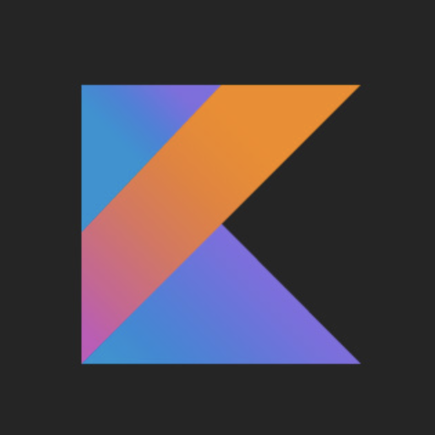

About me
Hi! My name is Damian Śniatecki and I am a Modern Fullstack Software Engineer.
During my career, I have already managed to solve many complex problems for companies in financial, insurance, automotive and tourism sectors. I have also helped to expand and improve few high traffic microservice backend systems.
Although my main expertise is Java and backend development, I also feel comfortable working with frontend technologies like Angular or React.
I deliver reliable software of the highest quality that is consistent with the SOLID principles. Simplicity, readability, testability and maintainability are crucial to me.
My soft skills are highly developed. I can be definitely described as a communicative person and a great team player.
Skills
Paradigms and techniques:
 OOP (Object Oriented Programming)
OOP (Object Oriented Programming)
 Functional Programming
Functional Programming
 Clean Code
Clean Code
 SOLID
SOLID
 TDD
TDD
 Reactive Programming
Reactive Programming
Programming languages:
 Java 17
Java 17
 Kotlin
Kotlin
 SQL
TypeScript
Python 3
HTML 5
CSS 3
SQL
TypeScript
Python 3
HTML 5
CSS 3
Frameworks:
 Spring Boot
Spring Boot
 Spring Webflux
Spring Webflux
 Spring R2DBC
Spring Security
JPA
Hibernate
Angular 13
Spring R2DBC
Spring Security
JPA
Hibernate
Angular 13
Databases:
 PostgreSQL
PostgreSQL
 TimescaleDB
Redis
MongoDB
TimescaleDB
Redis
MongoDB
Others:
 Microservices
Microservices
 REST
REST
 Docker
Docker
 Kubernetes
Kubernetes
 JVM
JVM
 Multithreading
RabbitMQ
Testcontainers
JSON
Protobuf
JUnit 5
OpenAPI
Multithreading
RabbitMQ
Testcontainers
JSON
Protobuf
JUnit 5
OpenAPI
Tools: Git Maven Visual VM Bash Linux Postman SwaggerHub Nginx Keycloak Prometheus Grafana Kibana Alert Manager
 - Main expertise
- Main expertise
Experience

Accenture AG · Software Engineer
May 2022 - Current · Contract
Developing applications for Accenture AG's clients.
Java Spring Boot OracleDBSEBA Bank AG · Software Engineer
Sep 2021 - Feb 2022 · Contract
Developing frontend and reactive backend applications. Designing, implementing, testing, deploying and monitoring asynchronous high traffic big data system.
Kotlin Spring Boot Spring Webflux Spring Security Spring R2DBC SQL PostgreSQL TimescaleDB TypeScript Angular RabbitMQ Docker Testcontainers OpenAPI Protobuf Prometheus Grafana KibanaDecerto · Java Developer
Apr 2021 - Aug 2021 · Contract
Improving company's core product “Hyperon” - tool for managing business rules. Implementing multithreading algorithms. Solving bugs and performance issues.
Java 8 Spring Boot JPA Hibernate SQL PostgreSQL OracleDB Docker OpenAPIAxis Data S.L.U. · Junior Software Engineer
Feb 2020 - Mar 2021
Developing high traffic microservice backend system. Designing, horizontal scaling, profiling, debugging and testing core jvm applications. Improving performance and optimizing memory usage. Implementing caching solutions. Creating, managing and monitoring Kubernetes pods, jobs and cronjobs.
Java 11/15 Dropwizard Spring Boot Python 3 NoSQL Redis Docker Kubernetes Helm Protobuf OpenAPI
Capgemini · Software Engineer Intern
Jun 2019 - Jan 2020
Developing frontend and backend applications. Implementing work automation solutions.
Java Spring Boot TypeScript Angular Docker Apex Salesforce AzureEducation
Wroclaw University of Science and Technology
Faculty of Computer Science and Management
Computer Science, Bachelor's degree
Personal Projects
Location Tracker
Mar 2022 - Current
Location Tracker is a microservice system responsible for tracking object locations. All the services it consists of are written in a reactive paradigm what makes them ideal for low-latency, high-throughput workloads.
Kotlin Spring Boot Spring Webflux Spring Security Spring R2DBC SQL PostgreSQL TimescaleDB TypeScript Angular RabbitMQ Docker Testcontainers OpenAPI Protobuf Keycloak Nginx Prometheus Grafana KibanaModern Java Microservice
Apr 2022 - Current
Modern Java Microservice is a service responsible for storing cars data. It is an example of a modern, reactive and lightweight microservice written with Java.
Java Spring Boot Spring Webflux Spring Security Spring R2DBC SQL PostgreSQL Docker Testcontainers OpenAPI

Modern Kotlin Microservice
Apr 2022 - Current
Modern Kotlin Microservice is a service responsible for storing cars data. It is an example of a modern, reactive and lightweight microservice written with Kotlin.
Kotlin Spring Boot Spring Webflux Spring Security Spring R2DBC SQL PostgreSQL Docker Testcontainers OpenAPI